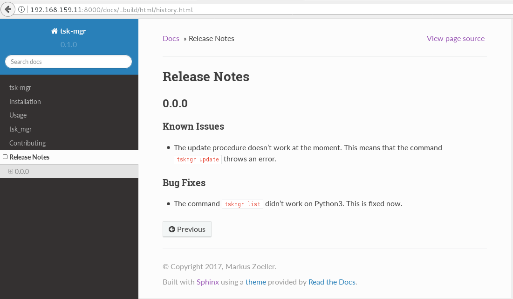

{kind=link}
{kind=link}
{kind=link}
{kind=link}
Content
Todo
add stuff here
“What features merged since the last release?” – “Did we introduce something which might break a deployment?” – “Let me grep through the commit history to check what happened.” Remember sentences like these when you’re about to release? If you like this fire-fighting mode, ignore this post. If you want to have a more relaxed release, this post will show you how to use a tool called reno to manage your release notes.
Todo
date
| Date | Change description |
|---|---|
| YYYY-MM-DD | The first release |
Below is the shortest end-to-end example I can think of. The steps are:
I trimmed some of the unnecessary output with [...]:
1 2 3 4 5 6 7 8 9 10 11 12 13 14 15 16 17 18 19 20 21 22 23 24 25 26 27 28 29 30 31 32 33 34 35 36 37 38 39 40 41 42 43 44 45 46 47 48 49 50 51 52 53 54 55 56 57 58 59 60 61 62 63 64 65 66 67 68 69 70 71 72 73 74 75 76 77 78 79 80 81 82 83 84 85 86 87 88 89 90 91 92 93 94 95 96 97 98 | $ apt-get install -y git # reno operates on git repos
$ git init # initialize a git repo
$ git config user.name "John Doe" # configure git repo (1/2)
$ git config user.email "jd@example.com" # configure git repo (2/2)
$ apt-get install -y python-pip # we will install reno with pip
$ pip install reno # install reno from PyPi
$ reno new my-first-release-note # create a release note
Created new notes file in releasenotes/notes/my-first-release-note-21b284249cec129c.yaml
$ git add -A # Add the release note to the repo
$ git commit -m "Add my first release note" # commit the release note
$
$ reno list # list the release notes
scanning ./releasenotes/notes (branch=*current* earliest_version=None)
including entire branch history
21b284249cec129c: adding releasenotes/notes/my-first-release-note-21b284249cec129c.yaml from 0.0.0
0.0.0
releasenotes/notes/my-first-release-note-21b284249cec129c.yaml (01a57fb590b9145fbc6bd24bb924c8f62396bf22)
$
$ reno report # create a report
scanning ./releasenotes/notes (branch=*current* earliest_version=None)
including entire branch history
21b284249cec129c: adding releasenotes/notes/my-first-release-note-21b284249cec129c.yaml from 0.0.0
=============
Release Notes
=============
0.0.0
=====
Prelude
-------
.. releasenotes/notes/my-first-release-note-[...]
Replace this text with content [...]
New Features
------------
.. releasenotes/notes/my-first-release-note-[...]
- List new features here, or remove this section. [...]
Known Issues
------------
.. releasenotes/notes/my-first-release-note-[...]
- List known issues here, or remove this section. [...]
Upgrade Notes
-------------
.. releasenotes/notes/my-first-release-note-[...]
- List upgrade notes here, or remove this section. [...]
Deprecation Notes
-----------------
.. releasenotes/notes/my-first-release-note-[...]
- List deprecations notes here, or remove this section. [...]
Critical Issues
---------------
.. releasenotes/notes/my-first-release-note-[...]
- Add critical notes here, or remove this section. [...]
Security Issues
---------------
.. releasenotes/notes/my-first-release-note-[...]
- Add security notes here, or remove this section. [...]
Bug Fixes
---------
.. releasenotes/notes/my-first-release-note-[...]
- Add normal bug fixes here, or remove this section. [...]
Other Notes
-----------
.. releasenotes/notes/my-first-release-note-[...]
- Add other notes here, or remove this section. [...]
|
Things you notice from this example are:
releasenotes under
the root directory of your project.YAML file which uses a combination of the
name you provided and a hash-like text. This ensures uniqueness in
file names.0.0.0 in this example)
which can be influenced with git tagging.Note
Most of the content in this post is based on [2].
The next sections will dive deeper into specific questions on how to use reno in your (most likely code driven) project.
It got developed to fit the needs of the OpenStack upstream development, but it can be used in any other project as well.
Todo
describe the use case here
Alternatives could be:
This post contains an example application (called tsk-mgr) we
will use to demo the usage of reno in a more real-world
manner. tsk-mgr is a TODO list management tool with a CLI interface and
persistence by using the Python shelve library [5]. It
has a docs directory which uses Sphinx [6] as documentation
generator. The structure of the app got created with cookiecutter [4].
To reproduce the actions below on your local laptop, download the
project source files.
The environment is based on Vagrant [3]. After extracting
the archive, use the demo environment like this:
1 2 3 4 5 | [markus@local]$ vagrant up
[markus@local]$ vagrant ssh
vagrant@reno:~$ sudo su -
root@reno:~# cd /applications/tsk_mgr/
root@reno:/applications/tsk_mgr# 2>/dev/null 1>&2 python -m SimpleHTTPServer &
|
Install and use the app like this:
1 2 3 4 5 6 7 8 9 10 11 12 13 14 15 16 17 18 19 20 21 22 23 | $ python setup.py develop # install the app in development mode
$ [...]
$
$ tskmgr --help # call the app
Demo Tasks Mgmt.
Usage:
tskmgr create <title>
tskmgr list
tskmgr update <id> <attr=value>...
tskmgr (-h | --help)
tskmgr --version
Options:
-h --help Show this screen.
--version Show version.
$
$ tskmgr create "Write a post about reno"
created: 5e16bde4-b1f6-4c9b-a090-cec9573c0a89 | Write a post about reno
$
$ tskmgr list
Current tasks:
* Write a post about reno
|
We build the documentation with:
1 | $ make docs # alternatively: cd docs && make html
|
Under the covers, this uses the sphinx-build command from Sphinx,
but we won’t dive deeper into this. Further reading can be found at
[7].
Now you can access the documentation in your local browser via the
URL http://192.168.159.11:8000/docs/_build/html/index.html. The
IP address got specified in the Vagrantfile and the port 8000
is the default for SimpleHTTPServer [10].
If you don’t like to use it anymore, destroy the environment with
vagrant destroy -f and remove the directory. You’re laptop will
be clean like nothing happened.
We will use the file docs/history.rst for our release notes. We start
with this view of the application release history:
We will use the reno Sphinx extension:
1 | $ pip install 'reno[sphinx]'
|
After that, we can add it to the Sphinx configuration file at
docs/conf.py. This diff shows the line to add to the extensions
list:
1 2 3 4 5 6 7 8 9 10 11 12 | diff --git a/docs/conf.py b/docs/conf.py
index c6d3e26..031653c 100755
--- a/docs/conf.py
+++ b/docs/conf.py
@@ -45,6 +45,7 @@ import tsk_mgr
extensions = [
'sphinx.ext.autodoc',
'sphinx.ext.viewcode',
+ 'reno.sphinxext',
]
# Add any paths that contain templates here, relative to this directory.
|
We will show the release notes in docs/history.rst. Use the
release-notes directive we gained from installing the reno Sphinx
extension:
1 | .. release-notes:: Release Notes
|
It’s empty for now, as we haven’t yet added a release note to this project.
Let’s assume we want to release the app (to PypI for example) but we discovered that the update of tasks doesn’t work. Instead of delaying the release date, we create a release note which states this known issue:
1 2 | $ reno new ki-update-not-working
Created new notes file in releasenotes/notes/ki-update-not-working-8f89e1c561bc7c91.yaml
|
I used the prefix ki for known issue, but that’s entirely optional.
Edit the yaml file with your editor of choice so that you have this content:
1 2 3 4 5 | ---
issues:
- >
The update procedure doesn't work at the moment. This means that the
command ``tsk-mgr.py update`` throws an error.
|
Tip
The char > is YAML folding syntax. It replaces every line break
with a space. If you want to keep the line breaks as you specified them,
use the | char. More details at [8] or the official
spec [9].
Remember, reno works on your git repository. Add the release note and commit it:
1 2 | $ git add -A
$ git commit -m "Add known issue about update"
|
Build the docs again with make docs and refresh the history page:
Here you see that the embedded restructured text in the YAML file can be interpreted and rendered by the reno Sphinx extension. This allows you to format the release notes for easier consumption for your users.
The examples before showed the usage of reno when no code was involved. We change this by doing an actual fix in the application.
Our app works fine in Python 2, but the shelve library behaves
differently in Python 3. We see this issue:
1 2 3 4 5 6 7 | $ python -V
Python 3.5.2
$
$ tskmgr list list
Traceback (most recent call last):
[...]
dbm.error: db type could not be determined
|
We fix this in the code and add a release note for the users to notice. The git commit consists of two files:
The diff looks like this:
1 2 3 4 5 6 7 8 9 10 11 12 13 14 15 16 17 18 19 20 21 22 23 | diff --git a/releasenotes/notes/bf-list-in-py3-a2ea5423b9d538f0.yaml b/releasenotes/notes/bf-list-in-py3-a2ea5423b9d538f0.yaml
new file mode 100644
index 0000000..8bf1bf5
--- /dev/null
+++ b/releasenotes/notes/bf-list-in-py3-a2ea5423b9d538f0.yaml
@@ -0,0 +1,5 @@
+---
+fixes:
+ - >
+ The command ``tskmgr list`` didn't work on Python3. This is fixed now.
+
diff --git a/tsk_mgr/tsk_mgr.py b/tsk_mgr/tsk_mgr.py
index 037840a..0f4bfa3 100755
--- a/tsk_mgr/tsk_mgr.py
+++ b/tsk_mgr/tsk_mgr.py
@@ -121,7 +121,7 @@ class Persistence(object):
def list_tasks(self):
db = shelve.open(Persistence.FILE_NAME, writeback=True)
- tasks = db.values()
+ tasks = [t for t in db.values()]
db.close()
return tasks
|
That’s the beauty of release note management with reno. The documentation is part of the very same code change.
The update documentation looks like this:
Todo
add stuff here
Todo
explain more here and reference to it [1]
| [1] | www.google.com |
| [2] | https://docs.openstack.org/reno/latest/ |
| [3] | https://www.vagrantup.com/intro/index.html |
| [4] | https://pypi.python.org/pypi/cookiecutter/1.6.0 |
| [5] | https://docs.python.org/2/library/shelve.html |
| [6] | http://www.sphinx-doc.org/en/stable/ |
| [7] | http://www.sphinx-doc.org/en/stable/man/sphinx-build.html |
| [8] | http://yaml-multiline.info/ |
| [9] | http://www.yaml.org/spec/1.2/spec.html#id2796251 |
| [10] | https://docs.python.org/2.7/library/simplehttpserver.html |